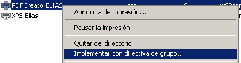

- Módulo: Sistemas Operativos
- Título del trabajo Servidor de impresión en Windows Server 2008
- Alumno: Elías González
- Curso Académico: 2013/2014
- Fecha de entrega: 23 de Enero de 2014
Agregamos las funciones siguientes:
Compartiremos dos impresoras, las dos simuladas, la XPS del propio Windows y la PDFCreator que instalaremos
Para agregar la XPS agregamos una impresora desde el panel de control (una cualquiera Apollo en este casa por escoger una):

Para que el PDFCreator no se quede esperando en el servidor a que aceptemos la impresión hacia PDF, tenemos que configurar el programa para que autoguarde las impresiones:

Luego cuando mandemos a imprimir desde el cliente veremos cómo aparecen en el servidor los archivos PDF.
Debemos tener creada una unidad organizativa con un grupo y usuario:
A continuación mostramos como podemos establecer permisos sobre las impresoras, desde la pestaña "Seguridad" en las propiedades de la impresora.
Para que las impresoras esten automáticamente configuradas en los clientes unidos la dominio tenemos que implementar las directivas de grupo, para ello hacemos clieck derecho en cada impresora y selecionamos "implementar con directiva de grupo..."
Selecionamos el dominio y abajo nuestra unidad organizativa:
En impresoras implementadas podemos ver las que tenemos compartidas en dominio a través de las directivas de grupo, y las cuales ya aparecen el los clientes unidos a dominio:
Para administrar las impresoras desde internet basta con conectarnos desde un navegador web colocando "http://nombreservidor/printers/" y accederemos al menu de administración.
Desde el propio navegador imprimimos la propia página de navegación para hacer la prueba, y selecionamos el pdf creator para comprobar que manda a imprimir hacia pdf y que lo autoguarda en el servidor como habiamos configurado, hacemos varias impresiones para ver si guarda varios pdfs correctamente:
En lista de documentos vemos la cola de impresión actual:
Para comprobarlo vamos al directorio que habiamos establecido para el autoguardado y vemos que se han guardado ahí las impresiones que hemos realizado